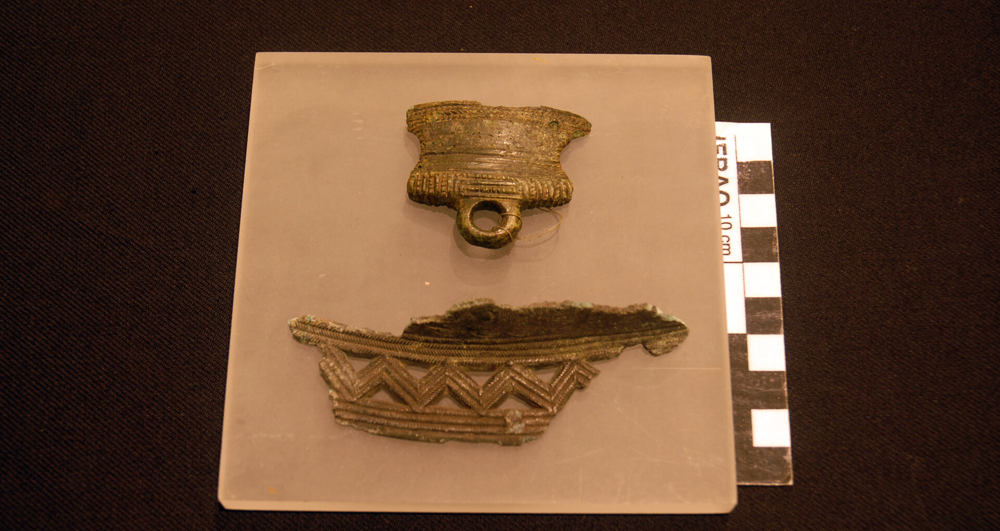
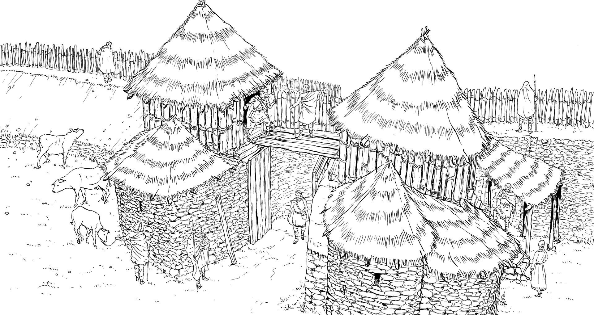
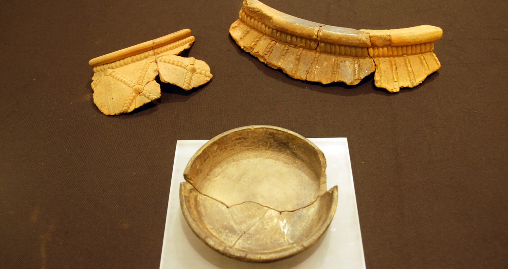
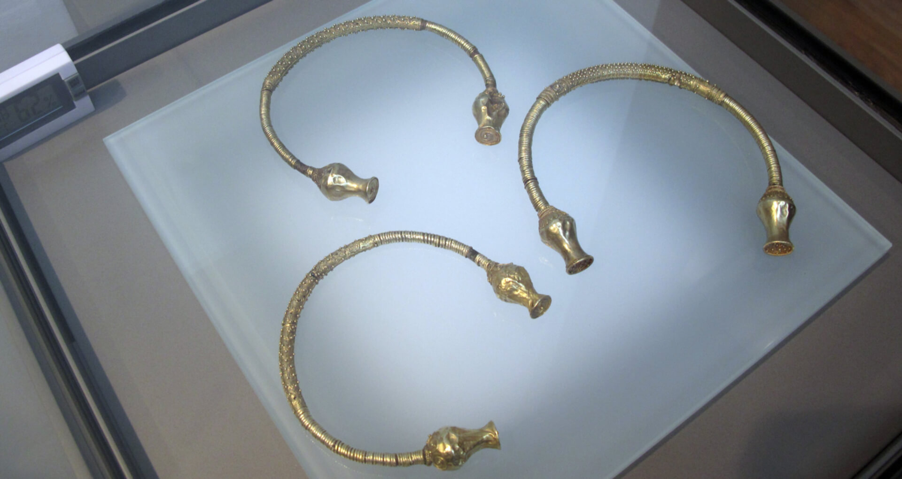
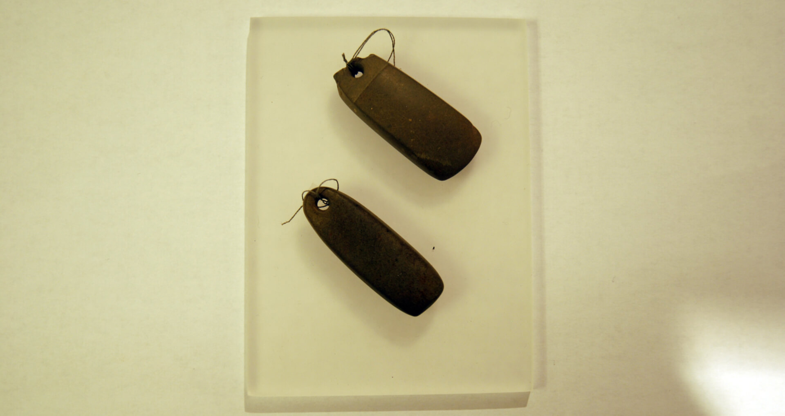

A
medida que avanza la Edad del Hierro, la sociedad castreña se va
haciendo más compleja, surgen numerosas innovaciones tecnológicas
y se desarrollan notablemente la metalurgia, el comercio y la minería.
En este contexto, aparecen las figuras de los artesanos especializados:
herreros, orfebres, alfareros, albañiles, carpinteros, mineros, etc.
Artesanos
metalúrgicos
En este castro aparecen abundantes herramientas y objetos de metal
(hierro y bronce), así como piezas de desecho de fundición (escorias).
Todo ello nos confirma el dominio de las técnicas metalúrgicas
artesanales y la posible existencia de un taller de producción local.

Fotos
de los objetos de bronce y
hierro encontrados en el castro
Los artesanos metalúrgicos podrían ser artesanos a tiempo completo. En
su taller fabricarían suficientes útiles metálicos para abastecer a
todo el poblado y los intercambiarían por productos agrícolas.

Artesano en su taller metalúrgico
Alfareros
En Borneiro se recuperaron unos 10000 fragmentos cerámicos, con y sin
decoración, procedentes de recipientes tanto domésticos (para cocinar y
comer) como de almacenaje. Estos últimos, que podían alcanzar el metro
de altura, se utilizaban para almacenar grano o alimentos y serían
realizados por alfareros especializados, puesto que su elaboración por
módulos requería de un complejo proceso de trabajo. Los recipientes más
pequeños serían realizados por una persona (seguramente una mujer) en
el espacio doméstico.
Hay restos de cerámica hecha a mano y a torno, además se ha documentado
una pieza del eje de un torno, lo que confirma sin dudas el uso del
mismo en este castro. Una vez modelado el cacharro se decoraba y se
cocía en hornos excavados en la tierra.

Distintos
tipos de cerámica aparecida en
Borneiro.
Orfebres
Los orfebres elaboraban distintos tipos de joyas, las más conocidas son
los torques, pero también aparecen arracadas, cadenas, anillos,
prendedores, etc.

Torques
de oro (Museo D. Diogo de
Sousa-Braga)
Estas piezas en su mayoría eran realizadas con oro que se obtenía de la
fundición de la pepitas o del polvo de oro. Si bien en Borneiro no
tenemos constancia de la aparición de materiales hechos en oro, sí
aparecieron dos "piedras de toque". Estas piedras durante mucho tiempo
fueron interpretadas como colgantes ornamentales, pero en realidad
servían para valorar la riqueza en oro de una aleación al observar el
color producido por la frotación de ambas superficies.

"Piedras de toque". Su tamaño no
excede los 5 cm.